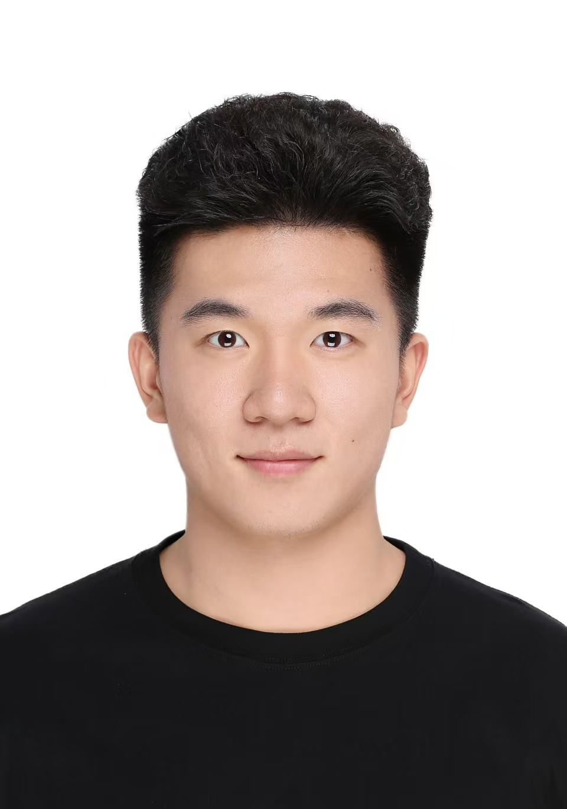

Cyrus Zhou
PhD Student in Computer Science, Stanford University
About
I am a Computer Science PhD student at Stanford University, advised by Prof. Monica S. Lam. I am affiliated with the Stanford Open Virtual Assistant Lab and the Stanford NLP Group. I have also done rotations with Prof. Kunle Olukotun and Prof. Fred Kjolstad.
My research interests span natural language processing, AI for healthcare, human-computer interaction, programming languages, and systems. Previously, I received my undergraduate degree from the University of Chicago.
Selected Publications
- Scalable High-Recall Constraint-Satisfaction-Based Information Retrieval for Clinical Trials Matching Preprint, 2026
- LowRA: Accurate and Efficient LoRA Fine-Tuning of LLMs under 2 Bits ICML, 2025
- If At First You Don't Succeed, Try, Try, Again...? Insights and LLM-informed Tooling for Detecting Retry Bugs in Software Systems SOSP, 2024
- Helping Users Debug Trigger-Action Programs IMWUT, 2022